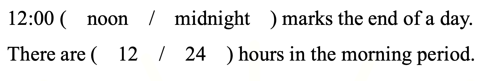

They ________ (give) help to old people sometimes.
Answer: give
Explanation: 一般现在时；根据主语判断动词原形或第三人称单数形式。
已掌握
| # | 单词/词组 | 中文意思 | 例句/说明 | 已掌握 |
|---|---|---|---|---|
| noun 名词 | ||||
| 1 | birthday | 生日 | My birthday is in May. | |
| 2 | cleaner | 清洁工人 | The cleaner works every day. | |
| 3 | family | 家庭 | My family is happy. | |
| 4 | dream | 梦想 | I can use dream in class. | |
| 5 | belt | 腰带 | He wears a black belt. | |
| phrase 短语 | ||||
| 6 | take photo | 照相 | I take a photo of my cat. | |
| 7 | wait a minute | 等一下 | Wait a minute, please. | |
| 8 | clean the dishes | 洗餐具 | I can use clean the dishes in class. | |
| 9 | dry the clothes | 晾衣服 | I can use dry the clothes in class. | |
| adjective 形容词 | ||||
| 10 | tiny | 小的 | I can use tiny in class. | |
| 11 | untidy | 不爱干净的 | I can use untidy in class. | |
| 12 | polite | 礼貌的 | I can use polite in class. | |
| pronoun 代词 | ||||
| 13 | them | 它们 | I can see them in the garden. | |
| verb phrase 动词短语 | ||||
| 14 | go hiking | 去徒步 | We go hiking on Sunday. | |
| verb/noun 动词/名词 | ||||
| 15 | travel | 旅行 | We travel during the holiday. | |
| 16 | change | 改变，找零 | I can change my answer. | |
| uncategorized 未分类 | ||||
| 17 | office | 办公室 | I can use office in class. | |
| 18 | cover | 遮盖 | I can use cover in class. | |
| 19 | win | 赢得 | I can use win in class. | |
| 20 | stand | 站立 | I can use stand in class. | |
| # | 单词/词组 | 中文意思 | 例句/说明 | 已掌握 |
|---|---|---|---|---|
| noun 名词 | ||||
| 1 | buffet | 自助餐 | We had lunch at a buffet. | |
| 2 | packet | 包；小包 | I bought a packet of biscuits. | |
| 3 | housewife | 家庭主妇 | The housewife is cooking. | |
| 4 | dust | 灰尘；除灰 | I can use dust in class. | |
| 5 | shelf | 架子 | I can use shelf in class. | |
| 6 | court | 球场 | We play on the court. | |
| 7 | venue | 地点 | The venue is near our school. | |
| 8 | stadium | 体育馆 | The game is in the stadium. | |
| 9 | guitar | 吉他 | She plays the guitar. | |
| 10 | clue | 线索 | This clue helps me. | |
| 11 | tutor | 家庭教师 | My tutor helps me study. | |
| noun phrase 名词短语 | ||||
| 12 | department store | 百货商店 | We shop at the department store. | |
| verb 动词 | ||||
| 13 | train | 训练 | I train every day. | |
| 14 | celebrate | 庆祝 | We celebrate my birthday. | |
| 15 | chase | 追逐 | The dog may chase the ball. | |
| preposition 介词 | ||||
| 16 | behind | 在后面 | The cat is behind the box. | |
| phrase 短语 | ||||
| 17 | Causeway Bay | 铜锣湾 | I can use Causeway Bay in class. | |
| 18 | step on | 踩到 | I can use step on in class. | |
| 19 | capital letters | 大写字母 | I can use capital letters in class. | |
| noun/verb 名词/动词 | ||||
| 20 | exercise | 锻炼 | Exercise is good for health. | |
| uncategorized 未分类 | ||||
| 21 | mid-year | 期中 | I can use mid-year in class. | |
| 22 | end-year | 期末 | I can use end-year in class. | |
| 23 | suitable | 合适的 | I can use suitable in class. | |
| 24 | phrases | 短语 | I can use phrases in class. | |
| 25 | spelling | 拼写 | I can use spelling in class. | |
| 26 | thief | 小偷 | I can use thief in class. | |
| 27 | royal | 皇家的 | I can use royal in class. | |
| 28 | stone | 石头 | I can use stone in class. | |
| 29 | knowledge | 知识 | I can use knowledge in class. | |
| adverb 副词 | ||||
| 30 | accidently | 偶然地 | I can use accidently in class. | |
| # | 单词/词组 | 中文意思 | 例句/说明 | 已掌握 |
|---|---|---|---|---|
| time/date 时间日期 | ||||
| 1 | February | 二月 | February is the second month. | |
| 2 | March | 三月 | March is the third month. | |
| 3 | July | 七月 | July is the seventh month. | |
| 4 | October | 十月 | October is the tenth month. | |
| time unit 时间单位 | ||||
| 5 | year | 年 | A year has 12 months. | |
| directions 方向 | ||||
| 6 | west | 西 | The sun sets in the west. | |
| numbers 数字 | ||||
| 7 | six | 6 | Six is 6. | |
| 8 | eleven | 11 | Eleven is 11. | |
| 9 | thirteen | 13 | Thirteen is 13. | |
| 10 | fourteen | 14 | Fourteen is 14. | |
| 11 | twenty | 20 | Twenty is 20. | |
| 12 | ninety | 90 | Ninety is 90. | |
| ordinal numbers 序数 | ||||
| 13 | third | 第三 | This is the third shape. | |
| solid shape 立体图形 | ||||
| 14 | hexagonal prism | 六棱柱 | A hexagonal prism has hexagonal faces. | |
| 15 | cylinder | 圆柱 | A cylinder has two circular faces. | |
| # | 单词/词组 | 中文意思 | 例句/说明 | 已掌握 |
|---|---|---|---|---|
| numbers 数字 | ||||
| 1 | 3-digit number | 三位数 | A 3-digit number has three digits. | |
| geometry 几何 | ||||
| 2 | obtuse angle | 钝角 | An obtuse angle is larger than a right angle. | |
| 3 | grid | 网格 | A grid helps us find positions. | |
| 4 | adjecent side | 邻边 | I can read adjecent side in a math question. | |
| question word 题目词 | ||||
| 5 | compare | 比较 | We compare two numbers. | |
| 6 | calculate | 计算 | Calculate the answer. | |
| 7 | estimate | 估计 | Estimate the answer first. | |
| 8 | onwards | 向前；继续向前 | Count onwards from 20. | |
| 9 | match | 匹配 | Match the number to the word. | |
| 10 | respectively | 分别地 | Tom and Ben have 2 and 3 books respectively. | |
| answer 答案 | ||||
| 11 | answer | 答案 | Write the answer in the box. | |
| comparison 比较 | ||||
| 12 | fewer | 更少 | There are fewer apples in this box. | |
| 13 | least | 最小的；最少的 | Which number is the least? | |
| time/date 时间日期 | ||||
| 14 | leap year | 闰年 | A leap year has 366 days. | |
| quantity 数量 | ||||
| 15 | pair | 双 | A pair means two things together. | |
| position 位置 | ||||
| 16 | below | 下面 | The box is below the table. | |
| 17 | front | 前面 | The door is at the front of the room. | |
| 18 | above | 上面 | The clock is above the board. | |
| operations calculation 运算 | ||||
| 19 | A times B | A✖️B | A times B means multiplication. | |
| 20 | equally | 平等地 | Share the apples equally. | |
| 21 | division | 除法 | Division is the opposite of multiplication. | |
| 22 | dividend | 被除数 | The dividend is divided by the divisor. | |
| teacher math vocabulary 老师数学词汇 | ||||
| 23 | each | 每个 | I can read each in a math question. | |
| currency money 货币 | ||||
| 24 | cent | 分 | One cent is a small amount of money. | |
| measurement 测量 | ||||
| 25 | metre | 米 | A metre is 100 centimetres. | |
| 26 | measure | 测量 | We measure the length with a ruler. | |
| 27 | distance | 距离 | Find the distance between the two points. | |
| 句型结构 | ||||
| 28 | Angle ... is larger than Angle ... | 角......大于角...... | Angle A is larger than Angle B. | |
| 29 | ... is to the south of ... | ......位于......的南侧。 | The library is to the south of the shop. | |
| 30 | ... is to the north of ... | ......位于......的北侧。 | The playground is to the north of the hall. | |


